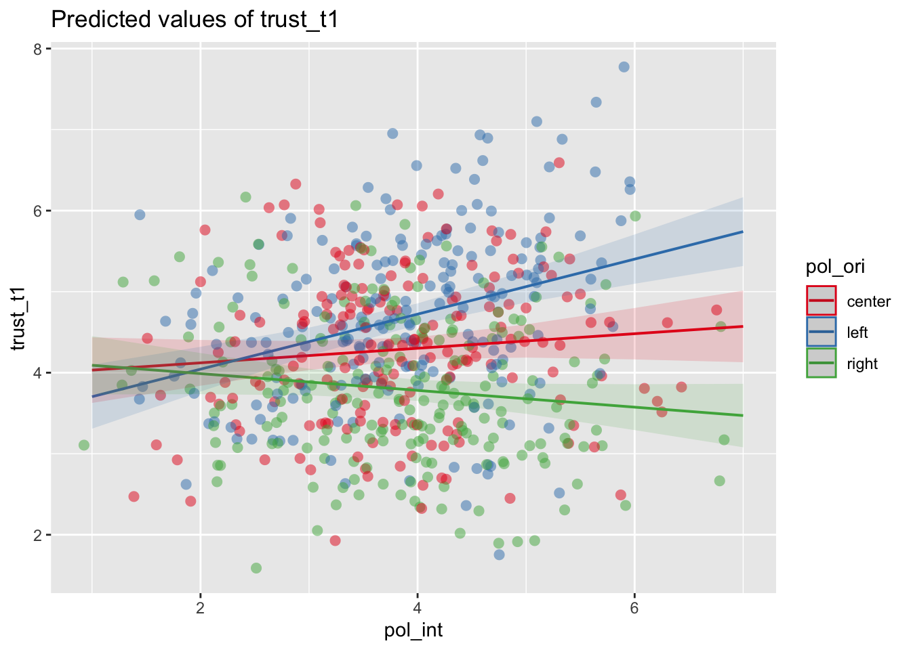
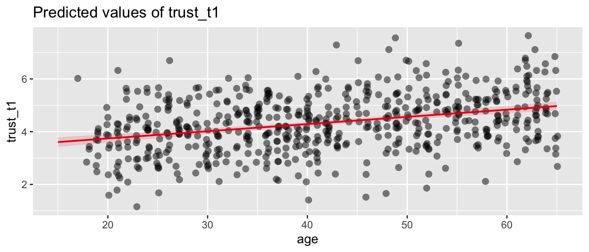
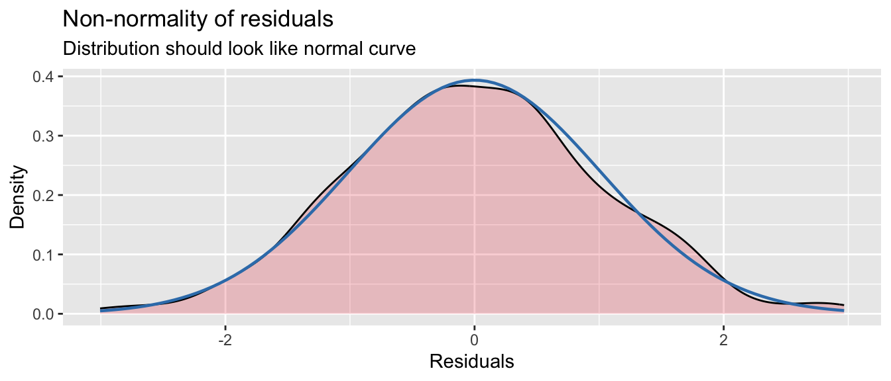
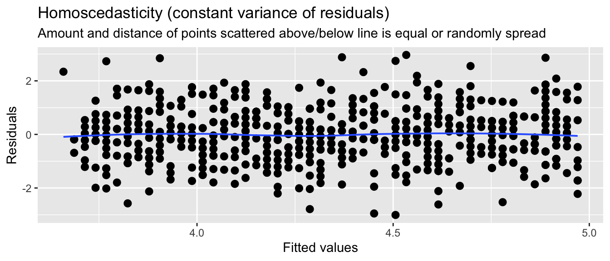

Linear regression
Predicting one variable from another
What is regression analysis?
Regression analysis is a statistical technique for predicting a dependent variable (DV) based on one or more independent variables (IVs). We use predict in a statistical sense, meaning that we are estimating how well we can guess the dependent variable given knowledge of the independent variable(s). The reason we want to do this is usually not to make actual predictions, but to understand the world better. If we can model how a variable is predicted by one or more other variables, we can make inferences about the relationship between these variables. Specifically, regression analysis allows us to test hypotheses of the sort:
- Older people have more trust in journalists
- People on the political left have more trust in journalists than people on the political right
You could test these hypotheses one-by-one with a correlation test and a t-test, respectively. The benefit of regression analysis is that you can test these hypotheses in the same model, and thereby also controlling for the relations between the independent variables. This allows us to deal with confounding, which can be critical when working with observational data. For instance, if younger people are more likely to be on the political left, then in order to test the effect of political orientation on trust, we need to somehow control for age.
This is a long tutorial, split up in three parts. We first discuss how regression analysis works under the hood. We won’t go deep into the math, but a basic understanding of the regression equation and the \(R^2\) value is helpful for understanding when and how to use regression analysis. If you already familiar with regression, and are just here to learn how to do it in R, you can safely skip this part. Second, we’ll show you how to use regression analysis in practice, where we go over a number of examples. If you’re new to regression, but you’re the learning by doing type, you might want to start here. Finally, we’ll talk about when you can use regression analysis, and what the assumptions are that you need to meet. Understanding the assumptions is important, but requires a good understanding of the basics. So we advice first getting comfortable with the previous parts before diving in.
How does it work?
In simple linear regression we have a dependent variable Y and an independent variable X, and we want to predict Y based on X. The goal is to find a mathematical formula that best describes their relationship. You can visually think of this as a scatterplot, where we draw a regression line such that the distance between the line and the data points is as small as possible.
This visualization corresponds to the regression equation. We’ve coloured the different parts of the equation according to the colours used in the visualization.
\[ \Large \color{Green} Y_i = \color{Blue} b_0 + b_1 X_i + \color{Red} \epsilon_i \]
- \(\color{Green} Y_i\) represents the real values of the dependent variable (\(Y_1, Y_2, ... Y_n\)) that we want to predict.
- \(\color{Blue} b_0 + b_1 X_i\) represents our prediction of y. It has two coefficients:
- intercept \(\color{Blue} b_0\): The value of Y when X is zero.
- slope \(\color{Blue} b_1\): How much Y changes for every unit increase in X.
- \(\color{Red} \epsilon_i\) represents the residual. This is the distance between the predicted and the real value of Y.1
Based on this equation, we can learn two important things about the relationship between X and Y:
- The effect of X on Y: The slope \(b_1\) tells us how much Y changes for every unit increase in X.
- The model fit: Based on the residual \(\epsilon_i\) we can calculate how well the model fits the data.
The effect of X on Y
Based on the coefficients of the regression model, we can make inferences about the relationship between the variables. In the example, we see that there is a positive relationship between X and Y, because the slope is positive. If X goes up, then Y tends to go up as well. This relation is expressed by the coefficient \(b_1\), which in our example is 0.95. For every unit increase in X, Y increases by 0.95.
We can also interpret the intercept (\(b_0\)), which is the value of Y when X is zero. However, this is not always meaningful. For example, if the independent variable is age, then the intercept would be the predicted value of Y for a person that is 0 years old. This is why the intercept is often not interpreted.
Model fit
Based on the coefficient of the independent variable we can say something about the relation between X and Y. However, this is not the full story. Based on the coefficients we can make a prediction of Y, but we don’t yet know how good this prediction is. This is why we also need the coefficent of determination (\(R^2\)), which tells us how well the model fits the data.
We can calculate this based on the residual \(\epsilon_i\). The residuals tell us how bad our prediction is for each data point. To get a single score for how bad our prediction is for all data points, we can calculate the residual sum of squares (\(SS_R\)). As the name implies, we take the sum of the squared residuals.
\[ SS_R = \large \sum_{i=1}^{n} {\color{red} \epsilon_i^2} \]
You can think of the \(SS_R\) as the variance of the real values of Y around the predicted values of Y. If our model is perfect, then the \(SS_R\) would be zero. But how do we know how not-perfect our model is? how high is too high? For this, we can look at the total sum of squares (\(SS_T\)), which is the sum of the squared differences between the real values of Y and the mean of Y.
\[ SS_T = \sum_{i=1}^{n} (Y_i - \bar{Y})^2 \]
The \(SS_T\) is the total variance in Y. Notice that the calculation is similar to the \(SS_R\), but instead of the predicted values of Y, we use the mean of Y. So now we can use this to see how much better our prediction is than just using the mean of Y. By subtracting the variance that we did not explain (\(SS_R\)) from the total variance (\(SS_T\)), we get the variance that we did explain, called the model sum of squares (\(SS_M\)). \[ SS_M = SS_T - SS_R \]
And now we can calculate the \(R^2\) value: the proportion of the total variance that has been explained by our model. \[ R^2 = \frac{SS_M}{SS_T} \]
The \(R^2\) is a value between 0 and 1, that tells us how much of the variance in the dependent variable is explained by the independent variable(s). In our example the \(R^2\) is 0.79, which means that 79% of the variance in Y can be explained by the variance in X. This is very high, especially for social science data. When we’re trying to predict human behaviour, we’re usually already happy if we can explain a few percent of the variance.
Interactive widget for building intuition
Try for yourself how the regression line changes when you change the values of the intercept and slope! The goal is to get the lowest possible SSE (and the highest possible R2), which means that the line is as close as possible to the data points.
Note that because you’re manually tweaking the intercept and slope, you might actually create a model that is worse than the mean of Y, which is why you can get a negative \(R^2\). In a regression model this is not possible, because it will always find a model that is at least as good as the mean of Y.
Spoiler
The optimal values for the intercept and slope are \(b_0 = 0.930\) and \(b_1 = 0.952\). This should give you an \(R^2\) of \(0.79\).
How to use
We’ll show you how to use regression analysis in several steps:
- First, we’ll look at simple linear regression with a single numeric independent variable.
- Then, we’ll perform a multiple regression with two numeric independent variables, and show you how this allows you to control for the relations between the independent variables.
- In the third step we’ll show you how to use a categorical independent variable in the regression model.
- Finally, we’ll show you how to use interaction effects in the regression model, and how you can use this to test moderation.
We’ll be using our standard (simulated) practice data, and a bit of tidyverse to load and clean the data. We’ll also be using the sjPlot package, which can create nice tables and plots of regression models.
library(tidyverse)
library(sjPlot)
d <- read_csv("https://tinyurl.com/R-practice-data") |>
mutate(age = if_else(age > 100, 2024 - age, age)) |>
select(age, political_orientation, political_interest, trust_t1,
news_consumption = `news consumption`)
dSimple linear regression
We start with the example of predicting trust in journalists based on age. For this we’ll be using the trust_t12 variable as the dependent variable, and the age variable as the independent variable. We can use the lm() function to create a linear regression model. Inside the lm() function we specify the formula for the regression, which has the format dependent ~ independent.
m <- lm(trust_t1 ~ age, data = d)The standard way to inspect the results is using the summary(m) function. This gives you all the information you need, but not in a very nice and readable format. We will therefore be using the tab_model() function from the sjPlot package to get a nice table of the results with some additional statistics (like the confidence intervals for regression coefficients).
tab_model(m)| trust_t1 | |||
|---|---|---|---|
| Predictors | Estimates | CI | p |
| (Intercept) | 4.08 | 3.80 – 4.35 | <0.001 |
| age | 0.00 | -0.00 – 0.01 | 0.210 |
| Observations | 595 | ||
| R2 / R2 adjusted | 0.003 / 0.001 | ||
Backup plan if tab_model doesn’t work
The tab_model function by default shows the regression table in your viewer pane. If this for some reason doesn’t work, you can also use the use.viewer=F argument to show the table in your default web browser.
tab_model(m, use.viewer=F)
Confidence intervalls without tab_model
In case you want to calculate the confidence intervals yourself, instead of using the tab_model function, you can use the confint() function. Here you provide the model as an argument, and you can also specify the level of the confidence interval (default is 95%).
confint(m)
confint(m, level = 0.95)The output of the regression analysis gives us values for two coefficients: the (intercept) and the age variable (like \(b_0\) and \(b_1\) in the regression equation). We get the coefficient estimates and p-values that tell us if these coefficients are statistically significant. With tab_model we also get the confidence interval.
- The coefficient for the
intercepttells us the predicted value oftrust_t1whenageis zero. This is not very meaningful in this case, because we don’t have any people with an age of zero in our data. - The coefficient for
agetells us how muchtrust_t1changes for every unit increase inage.- Our
agevariable is in years, so the coefficient 0 tells us that for every year of age, trust in journalists increases on average by 0 points. - The p-value of
.210tells us that this effect is not statistically. - The confidence interval tells us that we are 95% confident that the true effect of
ageontrust_t1is between 0 and 0.01.
- Our
We also get the \(R^2\) value, which tells us how well the model fits the data. Here we see that the \(R^2\) is 0.003, which means that 0.3% of the variance in trust_t1 can be explained by the variance in age.
In conclusion, this model shows that (in our simulated data) there is no significant effect of age on trust_t1.
Multiple regression
In the previous example we used a single independent variable (age) to predict the dependent variable. Now we’ll add a second numeric independent variable (news_consumption) to the model. This is called multiple regression, and it allows us to test the effect of multiple variables on the dependent variable at the same time. The formula for using multiple independent variables is: dependent ~ independent1 + independent2 + ....
As we mentioned earlier, by including both variables in the model we can test the effect of news_consumption on trust while controlling for age, and vice versa. To better investigate the effects of controlling, it is good practise to show multiple versions of the model side by side, which we can do by passing multiple models to the tab_model() function. To better compare effect sizes, we also include the standardized coefficients, which we can do with show.std = T in the tab_model() function. To keep the table simple, we won’t show the confidence intervalls this time (show.ci = F).
Standardized coefficients
The standardized coefficients are the coefficients of the model if all variables are standardized. This means that the variables are transformed to have a mean of 0 and a standard deviation of 1. This makes the coefficients comparable, because they are now in terms of standard deviations.
Think for a second why this makes sense. If you have a variable that goes from 0 to 100, and another variable that goes from 0 to 1, then the coefficients of these variables will be on completely different scales. Recall that the coefficient tells us how much the dependent variable changes for every unit increase in the independent variable. A unit increase of 1 on a scale from 0 to 100 is very different from a unit increase of 1 on a scale from 0 to 1. And even if two variables are both on a scale from 0 to 1, the effect of a unit increase can still be different if the variables have a different standard deviation. By standardizing the variables, a unit increase is now an increase of one standard deviation, which is the same for all variables.
You can request the standardized coefficients with the show.std = T argument in the tab_model() function. This will report the standardized coefficients (std. Beta) next to the regular coefficients (Estimates).
Alternatively, you can also use the rockchalk package to standardize the entire model. This will give you a new model with standardized coefficients, which you can then use to interpret the effect sizes. Using show.std = T in the tab_model() function actually does the same thing behind the scenes, so in practice this is often easier. But when first learning about regression analysis, it can be helpful to perform this step yourself to better understand what’s going on.
library(rockchalk)
m_std <- standardize(m)
tab_model(m_std)m1 <- lm(trust_t1 ~ news_consumption, data = d)
m2 <- lm(trust_t1 ~ news_consumption + age, data = d)
tab_model(m1, m2, show.std = T, show.ci=F)| trust_t1 | trust_t1 | |||||
|---|---|---|---|---|---|---|
| Predictors | Estimates | std. Beta | p | Estimates | std. Beta | p |
| (Intercept) | 3.70 | -0.00 | <0.001 | 3.73 | -0.00 | <0.001 |
| news consumption | 0.04 | 0.14 | 0.001 | 0.04 | 0.14 | 0.002 |
| age | -0.00 | -0.02 | 0.688 | |||
| Observations | 600 | 595 | ||||
| R2 / R2 adjusted | 0.018 / 0.017 | 0.018 / 0.015 | ||||
If we look at the first model, we see a significant effect of news_consumption on trust_t1 (\(b = 0.04\), \(p < 0.05\)). The \(R^2\) value of 0.018 suggests that news_consumption explains 1.8% of the variance in trust_t1.
However, when we include the age variable in the model, we see that the effect of news_consumption becomes much weaker (\(b = 0.04\), \(p = 0.002\)). Also, notice that the explained variance (\(R^2 = 0.018\)) isn’t much higher than in the model with just the age variable that we saw earlier. This suggests that the effect of news_consumption on trust_t1 is partially explained by age.
What we’re witnessing here is a form of confounding. There is a relation between the news_consumption and trust_t1 variables, but a part of this relation is spurious. age has an effect on both news_consumption and trust_t1: older people consume more news, and have more trust in journalists. By controlling for age, we can see the real effect of news_consumption on trust_t1 (though we can never be sure that we’ve controlled for all possible confounders). For a more detailed explanation of confounding, see the confounding tutorial.
Standardized coefficients
In the second model we now have two significant effects: age and news_consumption. So how can we tell which effect is stronger? If we look at the regular coefficients, we see that age (0) is quite similar to news_consumption (0.04). However, this is not a good way to compare the effects, because the variables are on different scales. A 1 unit increase in age is not the same as a 1 unit increase in news_consumption. By standardizing the variables, we can compare the effects in terms of standard deviations instead. For every standard deviation increase in age, trust_t1 increases by -0.02 standard deviations. For every standard deviation increase in news_consumption, trust_t1 increases by 0.14 standard deviations. So this suggests that the effect of age is stronger.3
Adjusted \(R^2\)
This is also a good time to talk about the \(R^2\) adjusted value. This is the \(R^2\) value, but corrected for the number of independent variables in the model. This is important, because the \(R^2\) value will always increase when you add more independent variables (i.e. more information) to the model. The \(R^2\) adjusted value corrects for this, which is why it’s slightly lower. So when you’re adding more independent variables to the model, you can use the \(R^2\) adjusted value to see if you’re not just adding noise.
Categorical IVs
The independent variable in a regression model can also be categorical. This allows us to include categorical variables in the model, similar to the t-test and ANOVA. Let’s see what this looks like when we predict trust_t1 based on the political_orientation variable, which has the values left, right and center.
We cannot directly use the values “left”, “right” and “center” in the regression equation, but we create so-called dummy variables. A dummy variable is a binary variable (i.e., it can only take the values 0 and 1) that represents whether something is the case or not. So if we want to test whether people that lean to the left have more trust in journalists, we can create a dummy variable that is 1 for people with orientation left, and 0 for all other people (i.e., right and center).
d = mutate(d, political_left = if_else(political_orientation == "left", 1, 0))
select(d, political_orientation, political_left) ## check the resultNow we can use this variable in the regression model.
m <- lm(trust_t1 ~ political_left, data = d)
tab_model(m)| trust_t1 | |||
|---|---|---|---|
| Predictors | Estimates | CI | p |
| (Intercept) | 4.03 | 3.93 – 4.13 | <0.001 |
| political left | 0.65 | 0.48 – 0.82 | <0.001 |
| Observations | 600 | ||
| R2 / R2 adjusted | 0.088 / 0.087 | ||
The interpretation of the results is almost identical to the previous example with the age variable. The only thing we need to keep in mind is that the political_left variable is binary, so it can only take the values 0 and 1. Accordingly, we don’t say that the trust in journalists increases by 0.65 points for every unit increase in political_left. Instead, we just say that people on the political left (political_left = 1) have on average a trust score that is 0.65 points higher than people that are not on the political left (political_left = 0).
Categories with more than two levels
In the previous example we created the dummy variable ourselves, but we can also let R do this for us. This is especially convenient if we have more than two categories. In addition, this also has the benefit that lm knows that the variable is categorical, which enables us (among other things) to visualize the model propertly.
We first need to make sure that our variable is of the factor type4. The difference between a character and a factor is that in a factor we explicitly tell R what the categories are, and what the order of the categories is. The order is important, because the first category will be the reference category (more on this later) in the regression model. To transform our political_orientation variable to a factor we can use the factor() function, and provide the levels argument to specify the order of the categories.
d <- mutate(d, political_orientation = factor(political_orientation, levels=c('center','left','right')))Now, when we use the political_orientation variable in the regression model, R will automatically create the dummy variables for us.
m <- lm(trust_t1 ~ political_orientation, data = d)
tab_model(m)| trust_t1 | |||
|---|---|---|---|
| Predictors | Estimates | CI | p |
| (Intercept) | 4.29 | 4.15 – 4.43 | <0.001 |
| political orientation [left] |
0.39 | 0.20 – 0.59 | <0.001 |
| political orientation [right] |
-0.49 | -0.68 – -0.30 | <0.001 |
| Observations | 600 | ||
| R2 / R2 adjusted | 0.125 / 0.122 | ||
Notice that there are now two coefficients for the political_orientation variable: one for left and one for right. Why 2, and not 3? This is because we only need two dummy variables to represent three categories. You can see how this works in the following table:
| political_orientation | is_left | is_right |
|---|---|---|
| left | 1 | 0 |
| right | 0 | 1 |
| center | 0 | 0 |
The center category is now the reference category. Recall that the intercept is the predicted value of the dependent variable when the independent variables are zero. In this model, the intercept therefore represents the predicted value of trust_t1 for people in the center category.
The effects of the left and right categories only tell us how much the trust in journalists changes for people in these categories compared to people in the reference category. So the political_orientation [left] coefficient tells us that trust is for people in the left category is 0.39 points higher than for people in the center category. The political_orientation [right] coefficient tells us that trust is for people in the right category is -0.49 points lower than for people in the center category. Based on this model, we cannot directly compare the left and right categories, because the center category is the reference category.
Determining what reference category to use
Depending on your hypotheses, you might want to use a specific category as the reference category. You can do this by changing the order of the levels in the factor() function. The first level will always be the reference category. So in the following example, the left category is the reference category.
d2 <- mutate(d, political_orientation = factor(political_orientation, levels=c('left','center','right')))
lm(trust_t1 ~ political_orientation, data = d2) |>
tab_model()| trust_t1 | |||
|---|---|---|---|
| Predictors | Estimates | CI | p |
| (Intercept) | 4.68 | 4.55 – 4.82 | <0.001 |
| political orientation [center] |
-0.39 | -0.59 – -0.20 | <0.001 |
| political orientation [right] |
-0.89 | -1.07 – -0.70 | <0.001 |
| Observations | 600 | ||
| R2 / R2 adjusted | 0.125 / 0.122 | ||
Interaction effects
One of the strengths of regression analysis is that it allows you to test interaction effects. This is when the effect of one independent variable depends on the value of another independent variable.
For example, in the previous model we saw that political_orientation has an effect on trust_t1. But we might theorize that this effect depends on a person’s overall political_interest. If people are not really interested in politics, then their political orientation might not have a big effect on their trust in journalists. In other words, we expect that political_interest moderates the effect of political_orientation on trust_t1.
To test this, we can include an interaction term in the regression model. That is, we add an extra term to the formula in which we multiply the two independent variables. Here we fit two models: one without the interaction term, and one with the interaction term. To keep the table readable, we’ll first rename the variables to shorter names.
ds <- rename(d, pol_ori = political_orientation,
pol_int = political_interest)
m1 <- lm(trust_t1 ~ pol_ori + pol_int, data = ds)
m2 <- lm(trust_t1 ~ pol_ori + pol_int + pol_ori*pol_int, data = ds)
tab_model(m1, m2, show.std=T, show.ci=F)| trust_t1 | trust_t1 | ||||||
|---|---|---|---|---|---|---|---|
| Predictors | Estimates | std. Beta | p | Estimates | std. Beta | p | std. p |
| (Intercept) | 3.92 | 0.04 | <0.001 | 3.94 | 0.04 | <0.001 | 0.550 |
| pol ori [left] | 0.39 | 0.38 | <0.001 | -0.58 | 0.37 | 0.128 | <0.001 |
| pol ori [right] | -0.49 | -0.47 | <0.001 | 0.25 | -0.48 | 0.484 | <0.001 |
| pol int | 0.10 | 0.10 | 0.012 | 0.09 | 0.09 | 0.187 | 0.187 |
| pol ori [left] × pol int | 0.25 | 0.25 | 0.009 | 0.009 | |||
| pol ori [right] × pol int | -0.19 | -0.19 | 0.033 | 0.033 | |||
| Observations | 600 | 600 | |||||
| R2 / R2 adjusted | 0.134 / 0.130 | 0.169 / 0.162 | |||||
In the first model we see roughly the same effects as before for political_orientation. We also see that political_interest has a significant effect on trust_t1 (\(b = 0.1\), \(p < 0.05\)).
In the second model we added the interaction terms. One important thing to note is that this changes the interpretation of the main effects. When you add an interaction term, the main effects of the variables are now the effect of the variable when the other variable is zero. This doesn’t always make sense. For instance, the effect of pol ori [left] now tells us the effect of political_orientation when political_interest is zero, but this is impossible because political_interest is measured on a scale from 1 to 7. Often, we therefore don’t report the main effects when we have an interaction term. We’ll also skip this for now (but see the optional block if you’re interested)
Interpreting main effects with interaction terms
When you add an interaction term, the main effects of the variables used in this term are now the effect of the variable when the other variable is zero. As we mentioned, sometimes this doesn’t make sense. However, we can make it make sense, if we rescale the variables so that the value zero is meaningful. We could for instance center the variables. This way, zero is the mean of the variable, and the main effects are the effect of the variable at the mean of the other variable.
This is also why in the model we see very different results for the unstandardized and standardized coefficients. Standardized coefficients are centered, so they are the effect of the variable at the mean of the other variable. This is also why we now get an additional std. p column, which gives us the p-value of the standardized coefficients. In our model, the unstandardized coefficients are not significant, but the standardized coefficients are. Let’s separately interpret the unstandardized and standardized coefficients for the political_orientation effects.
- Unstandardized coefficients:
pol_ori [left]: The effect ofpolitical_orientationontrust_t1whenpolitical_interestis zero is not significant.pol_ori [right]: The effect ofpolitical_orientationontrust_t1whenpolitical_interestis zero is not significant.
These effects should not be interpreted, because political_interest is a scale from 1 to 7, so a value of zero is not meaningful. It just happens to be the case that as you extrapolate to a political_interest of zero (i.e. go to the left on the plot below) there is no expected difference in trust_t1 between people with different political_orientation.
- Standardized coefficients:
pol_ori [left]: The effect ofpolitical_orientationontrust_t1at the mean ofpolitical_interestis significant.pol_ori [right]: The effect ofpolitical_orientationontrust_t1at the mean ofpolitical_interestis not significant.
These coefficients do have a meaningful interpretation. Based on our analysis we can see that for people with low political_interest, there is no significant effect of political_orientation on trust_t1. If you look at the plot below, you see that the lines overlap at the left. As political_interest increases (towards the right), the lines start diverging, indicating that the effect becomes significant at some point. The main effect simply tells us that for the average value of political_interest, the effect is already significant.
Our main interest is in the interaction terms. The pol ori [left] x pol int coefficient tells us how much the effect of political_orientation on trust_t1 changes for every unit increase in political_interest. This is positive, which means that the effect of political_orientation on trust_t1 becomes stronger as political_interest increases. We see the opposite effect for the pol ori [right] x pol int coefficient, which is negative.
This is notoriously difficult to interpret, so a good technique for interpreting interaction effects is to plot the interaction. The sjPlot package has the plot_model() function, which can plot the predicted values (type = "pred") for a selection of terms (terms = c('pol_int','pol_ori')). This will show you how the effect of political_orientation on trust_t1 changes as political_interest increases.
plot_model(m2, type='pred', terms = c('pol_int','pol_ori'),
show.data = T, jitter = T)
On the left side of the plot, where political interest is low, we see that there is not yet a significant effect of political orientation on trust in journalists. This makes sense: if you’re not interested in politics, then your political orientation might not matter that much. However, as political interest increases, we see that the line diverge, indicating an increasingly large effect of political orientation. We can thus conclude that the effect of political orientation on trust in journalists is moderated by (i.e. depends on) political interest.
Conditions and assumptions
Regression analysis is a very versatile tool that can be used in many different situations. However, there are some assumptions that need to be met in order to use it correctly. The most important assumptions are:
- Linearity: The relationship between the independent and dependent variable(s) should be linear.
- Normality: The residuals should be normally distributed.
- No outliers: Extreme values can have a large effect on the model.
- Homoscedasticity: The variance of the residuals should be constant.
- Independence: The observations should be independent of each other.
- No multicollinearity: In multiple regression, the independent variables should not be too highly correlated with each other.
Whether these assumptions are met is generally a grey area. It’s not a matter of “yes” or “no”, but rather a matter of “to what extent”. Let’s discuss some strategies for checking these assumptions.
Linearity
Remember that we are trying to fit a straight line through the data. If the relationship between the independent and dependent variable is not linear, then the model will not fit the data well. To check this assumption, you can plot the data and see if a straight line is a good fit. With the plot_model() function from the sjPlot package you can plot the predicted (type = "pred") values for an independent variable (terms = "age") on top of the data points (show.data = T, jitter = T5).
m <- lm(trust_t1 ~ age, data = d)
plot_model(m, type = "pred", terms = "age",
show.data = T, jitter = T)If you check this plot for our practice data, you’ll see that the relationship between age and trust_t1 is indeed linear. Let’s instead look at an example where the relationship is not linear. In the following plot the relation between age and happiness is quadratic, following a u-shape. Younger and older people tend to be happier than middle-aged people. A regular linear model (left) will not be able to capture this relationship well, and will therefore not fit the data well. On the right we fit a regression line to the actual relation.

Normality
The residuals of the model should be normally distributed. If you look at the figure of the regression model at the top of this tutorial, you can see how the residuals (the red lines) are distributed around the regression line. This distribution should be normal.
You can to some extend see whether this is the case using the same plot as above. But there are also special diagnostics plots that can help you with this. With the plot_model() function you can plot the residuals (type = "diag") of the model.
diag_plots <- plot_model(m, type = "diag")This creates a series of plots that show the residuals in different ways. What diagnostics plots are produced depends on the type of model you have. For regression we get three plots:
diag_plots[[1]]: Non-normality of residuals and outliersdiag_plots[[2]]: Non-normality of outliersdiag_plots[[3]]:Homoscedasticity
Let’s first focus on the second plot, which shows just the distribution of the residuals. The coloured area is a smoothed density plot of the residuals, and the blue line shows a proper bell curve for reference. If there is a clear difference between the two, then the residuals are not normally distributed.
diag_plots = plot_model(m, type="diag")
diag_plots[[2]]
No outliers in the residuals
Outliers can have a large effect on the model. Usually outliers in the residuals are related to outliers in the variables, which can be detected when inspecting and cleaning the data. For detecting outliers in the residuals, the Non-normality of residuals and outliers plot can be helpful. If there are outliers, they will show up as points that are far away from the line.
diag_plots[[1]]
Homoscedasticity
The residuals should have a constant variance. What we mean by this is that among the fitted values in the model, the variance of the residuals should not systematically increase or decrease. For instance, if in our model of age predicting trust the residuals are very small for young people, and very large for old people, then the model is not homoscedastic.
This can be checked with the Homoscedasticity plot. If the residuals are homoscedastic, then the residuals should be randomly distributed around the horizontal line.
diag_plots[[3]]Now let’s look at an example where the variance of the residuals systematically increases with the fitted values. So the higher our prediction of trust_t1, the larger the residuals. We then say that the residuals are heteroscedastic.

Independence
Independence means that the residuals should not be related to each other. There are many ways in which this assumption can be violated.
One common case is data over time. If you’re measuring something over time, like a person’s number of social media followers, then it is very common that every observations is highly dependent on the previous observation. This is called autocorrelation (the variable correlates with itself). In order to use these data in a regression model, you need to use special techniques that take this autocorrelation into account. This area of statistics is called time series analysis.
Another common case is that your observations are nested within groups. For example, say your measuring the relation between social media use and happiness, and you gathered data from multiple countries. Observations nested in countries are not independent, because people within the same country tend to be more similar to each other than people from different countries. Some countries are overall happier, and some countries have more social media use. Country therefore could act as a confounder. To reduce the dependency between the residuals, you could control for countries using dummy variables, or use more advanced techniques like multilevel models.
No multicolinearity
Multicolinearity is a situation where two or more independent variables are highly correlated with each other. This can cause problems in the model, because the model cannot distinguish between the effects of the two variables. To check for multicolinearity, you can look at the correlation matrix of the independent variables (see the correlation tutorial). A rough rule of thumb is that if the correlation between two variables is higher than 0.5 you should be cautious, and if it’s higher than 0.8 you should be very worried.
You should try to avoid high correlations between independent variables where possible. If you have multiple variables that are highly correlated, they might be measuring a common factor, so you could consider combining them into a single variable (see the scale construction tutorial).
The variance inflation factor
A more appropriate way to check for multicolinearity is to use the variance inflation factor (VIF). Looking just at correlations is actually not good enough. The more accurate definition of multicolinearity is that one independent variable can be predicted by the other independent variables in the model. So looking at bi-variate correlations is not enough, because the prediction of one variable can be spread out over multiple other variables.
In R we can calculate the VIF of the variables in a model with the vif() function from the car package. This returns the VIF score for each independent variable. If the VIF is 1 or lower, we don’t have to worry about multicolinearity. If it’s higher than 5, we very likely have a problem. If it’s between 1 and 5, it’s a grey area, and you (as always) have to use your judgement.
library(car)Loading required package: carData
Attaching package: 'car'The following object is masked from 'package:purrr':
someThe following object is masked from 'package:dplyr':
recodem <- lm(trust_t1 ~ age + news_consumption, data = d)
vif(m) age news_consumption
1.322073 1.322073 How to report
For APA style reporting of regression analysis, we generally report two things:
- The coefficients that we’re interested in
- The model fit
Reporting the coefficients
- The coefficients of the model, which tell us the effect of the independent variables on the dependent variable.
- The model fit, which tells us how well the model fits the data.
Footnotes
For example, at \(X = 10\), the blue line predicting Y passes through the point \(Y = 10.45\). However, the real value of Y at this point is 8.66. So the residual \(\epsilon_i\) at this point is \(8.66 - 10.45 = -1.79\).↩︎
We use the
trust_t1variable here, because for the current analysis we are not interested in the effect of the experimental group. Sincetrust_t1is measured before the experiment, it is not influenced by the experiment.↩︎Note that we have not tested if the difference between the two coefficients is significant. We will not go into this here, but note that the confidence intervalls of the standardized coefficients can provide more confidence in this comparison.↩︎
You can also use a
charactervariable directly, but thefactortype is more appropriate for categorical variables. It also let’s you specify the order of the categories, which is important for regression analysis because it let’s you specify the reference category.↩︎Jitter is a small amount of noise that is added to the data points to prevent them from overlapping in case their values are the same.↩︎